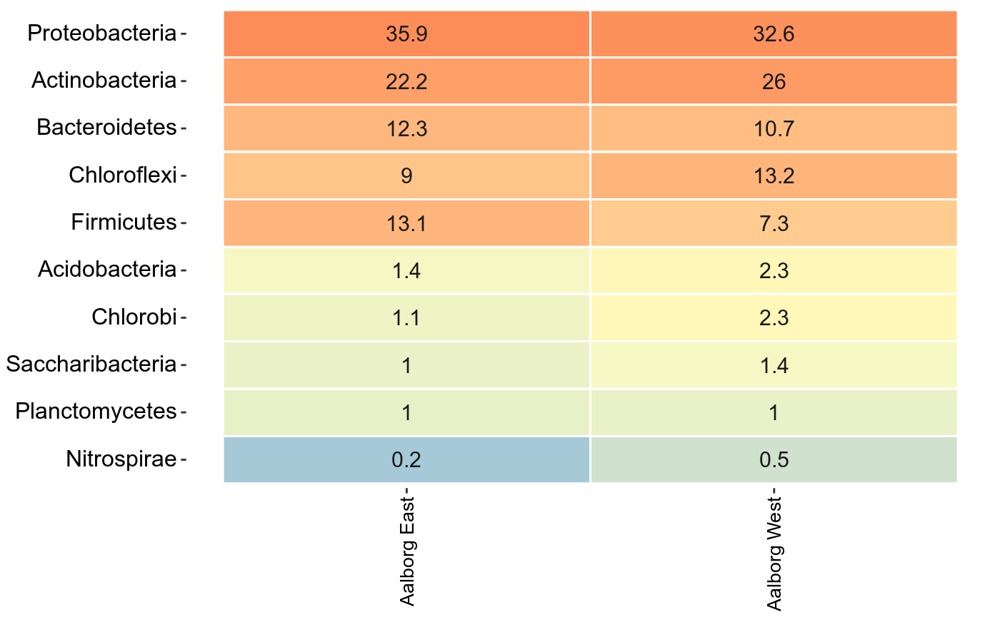
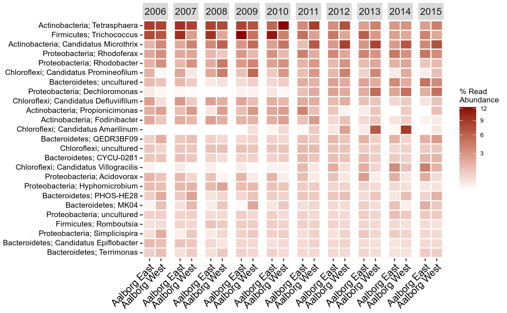
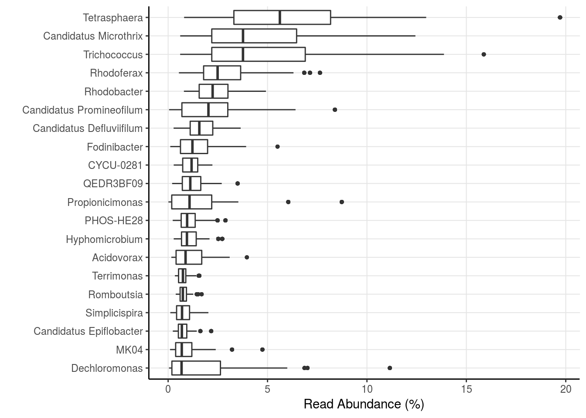
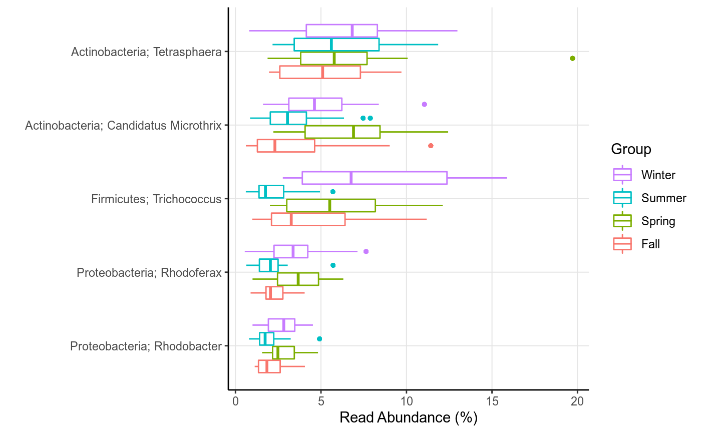
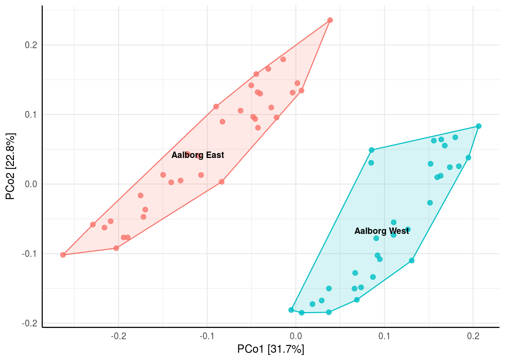

This is a short guide to the basics of ampvis2, how to load data, as well as a few basic visualisation functions using example data. A complete explanation of all functions, their purpose, different arguments and examples can be found in the Functions tab. First, install ampvis2 as described on the front page.
The most notable change with ampvis2 is that phyloseq is no longer used to handle the data, which makes it simpler to understand and work with, and lighter. The data is now simply stored as a list containing 3 dataframes (4 if reference sequences are provided) named "metadata", "otutable" and "tax" (short for taxonomy). The data ampvis2 needs is an OTU-table generated with fx workflow scipts v.4+, where the last 7 columns is the taxonomy, and a metadata sheet containing any information about the samples, for example where the sample was taken, date, pH, temperature etc.
First, load ampvis2 and import your data into R dataframes using an appropriate read function:
library(ampvis2)myotutable <- read.delim("data/otutable.txt", check.names = FALSE)
mymetadata <- readxl::read_excel("data/metadata.xlsx", col_names = TRUE)Note that there are multiple types of CSV files. To change the separator to fx a comma you can adjust with the argument sep = ",". Refer to the documentation of read.table.
After the two files have been loaded into R, check that the resulting data frames have been loaded correctly (click them to the right under “Data”), so that either the rownames or a column named “OTU” contains the OTU ID’s in the loaded otutable, and that the first column in the metadata are the matching sample ID’s. It is highly recommended to read the documentation of amp_load() when loading your own data.
Now combine the data using amp_load(), which checks the data and combines it into one ampvis2 object, making it easier to manipulate, filter and subset all elements of the data at once for analysis:
library(ampvis2)
d <- amp_load(otutable = myotutable,
metadata = mymetadata
#,fasta = "path/to/fastafile.fa" #optional
)The individual dataframes in the list can be explored with View(d$metadata).
With the ampvis2 package comes a large example data set with 573 samples taken from the activated sludge from 55 Danish Wastewater Treatment Plants in the period 2006-2013, which can be loaded with data("MiDAS"). Simply typing the name of any ampvis2 object in the console will show a short summary of the data:
data("MiDAS")
MiDAS## ampvis2 object with 5 elements.
## Summary of OTU table:
## Samples OTUs Total#Reads Min#Reads Max#Reads
## 658 14969 20890850 10480 46264
## Median#Reads Avg#Reads
## 31800 31749.01
##
## Assigned taxonomy:
## Kingdom Phylum Class Order Family
## 14969(100%) 14477(96.71%) 12737(85.09%) 11470(76.63%) 9841(65.74%)
## Genus Species
## 7380(49.3%) 28(0.19%)
##
## Metadata variables: 5
## SampleID, Plant, Date, Year, PeriodIf you have loaded the raw DNA sequences of the OTUs from a FASTA file (with the fasta = argument) you can also get a short summary by typing the name of the ampvis2 object followed by $refseq:
MiDAS$refseq## 14969 DNA sequences in binary format stored in a list.
##
## Mean sequence length: 472.922
## Shortest sequence: 425
## Longest sequence: 525
##
## Labels:
## OTU_1
## OTU_2
## OTU_3
## OTU_4
## OTU_5
## OTU_6
## ...
##
## Base composition:
## a c g t
## 0.261 0.225 0.319 0.194The loaded data can be subsetted based on variables in the metadata using the amp_subset_samples() function, which can then be stored as a new object and analysed separately:
MiDASsubset <- amp_subset_samples(MiDAS, Plant %in% c("Aalborg West", "Aalborg East"))## 590 samples and 5512 OTUs have been filtered
## Before: 658 samples and 14969 OTUs
## After: 68 samples and 9457 OTUsor for a more complex subset, you can subset based on two or more variables using “&” to separate the conditions, or simply use the function more than once. The “!” (logical NOT operator) can be thought of as “except” and is useful to remove fx outliers. Furthermore, the minreads = 10000 argument removes any sample(s) with total amount of reads below the chosen threshold:
MiDASsubset <- amp_subset_samples(MiDAS, Plant %in% c("Aalborg West", "Aalborg East") & !SampleID %in% c("16SAMP-749"), minreads = 10000)## 591 samples and 5539 OTUs have been filtered
## Before: 658 samples and 14969 OTUs
## After: 67 samples and 9430 OTUsThe amp_subset_taxa() function instead subsets based on the taxonomy, where you simply provide a vector with the taxa you are interested in, separated by a comma:
MiDAS_Chloroflexi_Actinobacteria <- amp_subset_taxa(MiDAS, tax_vector=c("p__Chloroflexi", "p__Actinobacteria"))The taxonomic rank is indicated by fx “p__" for phylum and “g__" for genus etc, followed by the name of the taxon (case-sensitive, first letter almost always capital). To filter individual OTUs simply provide the OTU name(s) as-is in a vector, fx c("OTU_1206").
All ampvis2 plots are generated using the ggplot2 package. You can change the look of the plots to better suit your needs, add more layers to the plots and use other ggplot2 functions in combination with ampvis plots if needed. Refer to the ggplot2 documentation for more information. amp_heatmap() by default aggregates to phylum level and shows the top 10 phyla, ordered by mean read abundance across all samples:
amp_heatmap(MiDASsubset, group_by = "Plant")
There are many arguments you can use to suit your needs, for a full list see the reference (click the function names to go to its reference page). For example, you can manually select the level at which to aggregate, how many to show, add additional higher level taxonomic information, group the samples differently by the metadata, hide the values, change the colors and scaling, and much more. You can also adjust the text labels for better readability or adjust the positioning of the legend (adjusting ggplot2 plots is always done with “+” after the actual ampvis2 function):
amp_heatmap(MiDASsubset,
group_by = "Plant",
facet_by = "Year",
tax_aggregate = "Genus",
tax_add = "Phylum",
tax_show = 25,
color_vector = c("white", "darkred"),
plot_colorscale = "sqrt",
plot_values = FALSE) +
theme(axis.text.x = element_text(angle = 45, size=10, vjust = 1),
axis.text.y = element_text(size=8),
legend.position="right")
amp_boxplot() generates boxplots, again ordered by mean read abundance across all samples:
amp_boxplot(MiDASsubset)
The arguments you can provide are similar to those used in amp_heatmap() and other ampvis2 functions:
amp_boxplot(MiDASsubset,
group_by = "Period",
tax_show = 5,
tax_add = "Phylum")
The amp_ordinate() function has been expanded to support 7 different ordination methods, various data transformations and interactive plots by using Plotly. By default any OTU with an abundance no higher than 0.1% in any sample is removed, which drastically improves the calculation time. You can of course adjust this threshold manually by changing the filter_species = 0.1 argument. Other than this, there are only four main arguments that are involved in the actual calculations, the rest are just various plotting features. These four are type = "", transform = "", distmeasure = "", and lastly constrain = "" for constrained ordination (only used in Redundancy Analysis (RDA) or Canonical Correspondence Analysis (CCA)).
When analysing microbial community composition data it is recommended to use the Hellinger transformation (see Legendre et al, 2001 or Numerical Ecology for details) for most types of ordination methods except the distance-based ordination methods (Principal Coordinates Analysis (PCoA) and non-Metric Multidimensional Scaling (nMDS)), where you also have to select a distance measure manually by the distmeasure = "" argument, for example Bray-Curtis dissimilarities:
amp_ordinate(MiDASsubset,
type = "pcoa",
distmeasure = "bray",
sample_color_by = "Plant",
sample_colorframe = TRUE,
sample_colorframe_label = "Plant") + theme(legend.position = "blank")
And lastly an example of constrained ordination by Canonical Correspondence Analysis (CCA), which in this case reveals how samples taken at different seasonal periods (constrain = "Period") of the year can explain the data:
ordinationresult <- amp_ordinate(MiDASsubset,
type = "CCA",
constrain = "Period",
transform = "Hellinger",
sample_color_by = "Period",
sample_shape_by = "Plant",
sample_colorframe = TRUE,
sample_colorframe_label = "Period",
detailed_output = TRUE)
ordinationresult$plot
Notice that the plot can be saved as a more detailed object (detailed_output = TRUE), so additional details about the ordination result can be obtained for evaluation, fx a screeplot by ordinationresult$screeplot or some more raw data by ordinationresult$model.
There are numerous other functions to try out. Go explore them in the Functions tab.